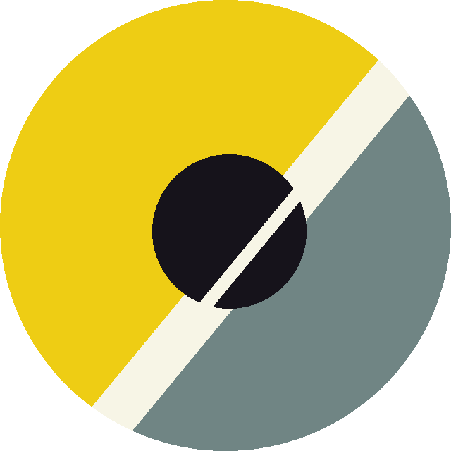
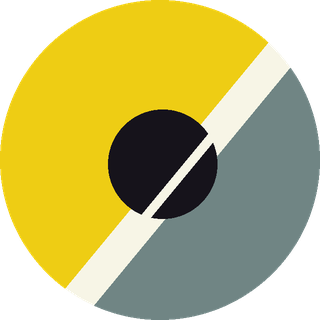
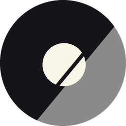
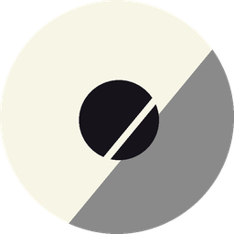
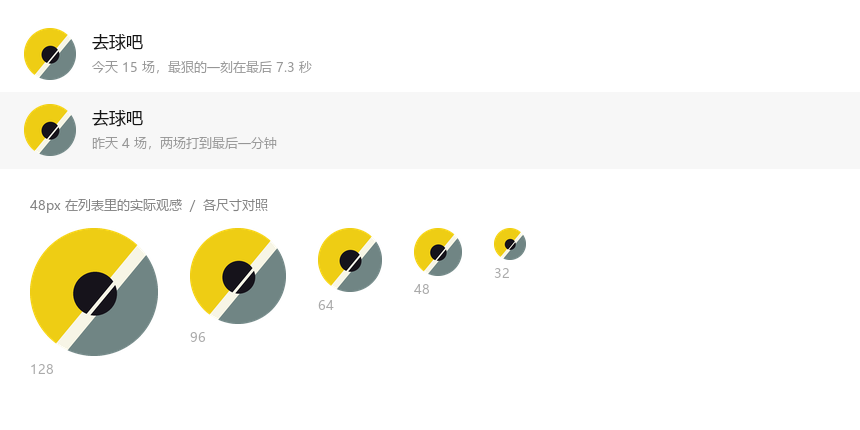
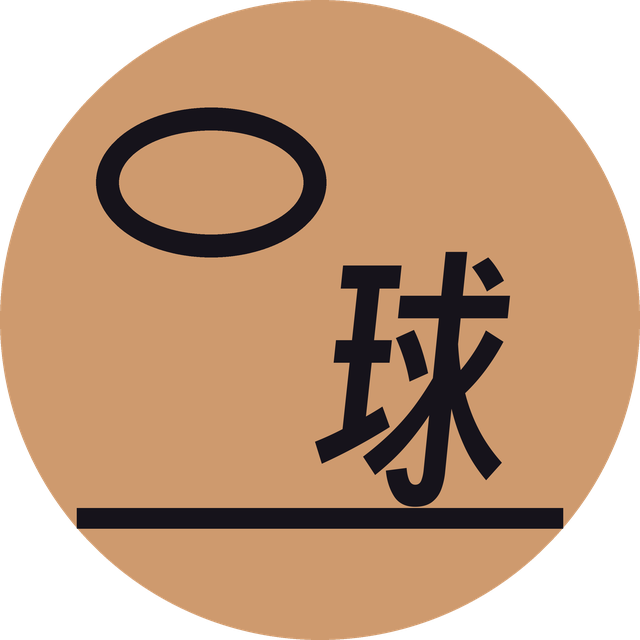

一条 50° 的线把画面切成两块，球压在线上。
这条线不是画的装饰，是从照片上量出来的：斜率 dx/dy = −0.826，线宽占画宽 10.3%，球心几乎正中（偏移不到 1%）。
这一张和上一张的空间关系正好相反。上一张是两个主体绕画心对称（球 + 篮筐），这一张只有一个中心和一条贯穿的线。
| 空间事实 | 实测值 | 标志里的去处 |
|---|---|---|
| 球心位置 | (0.509W, 0.513H) | 几乎正中心，直接采用 |
| 球径 | 0.40W | 缩到 0.34，见下 |
| 分界线倾角 | 50.4°（dx/dy = −0.826） | 直接采用，未做美化 |
| 线宽 | 0.103W | 直接采用 |
| 球心到线心垂距 | 0.062W（球半径 0.20W） | 线是穿球的，不是相切 |
| 黄 / 蓝灰 / 暖白 / 墨 | #EECD14 #708584 #F7F5E6 #16131B | 全部取样，未调色 |
丢弃的东西：球面的颗粒材质、球缝的弧度、投影、摄影的暗角。这些在 24px 下全部糊成噪点，画出来只是装饰。
球径 0.40 → 0.34。0.40 是相对一张方形照片量的；放进圆形头像后同样的比例视觉过重，会把分界线吃掉大半，只剩两小段白线。34 保留「压线」的关系，同时让线还能读出来。
线穿过球时在球内收窄（10.3 → 2.8）。这一条同时解决三件事：线不断、球是完整的圆、那条窄缝正好就是篮球的球缝。没有它，球要么被切成两半，要么像个被咬了一口的圆。

彩色 · 主用黄 / 蓝灰 / 墨
单色 · 印刷水印墨 / 中灰 / 白
反白 · 深底白 / 中灰 / 墨单色版靠三档明度重排：左块压到实墨、右块退到中灰、球反白。球压在墨线上，缝和线连成一体，所以线在单色下仍然是连续的。
48px 时球缝已经吃掉，球退回成一个实心圆；双色分割和斜线还在。这是可以接受的降级——微信列表里真正被记住的是那块黄，不是细节。


一句话：第一版赢在「像篮球」，第二版赢在「在列表里被看见」。
r=50 之外。reference2.png（639×737） · 生成脚本 brand/render_v2.py